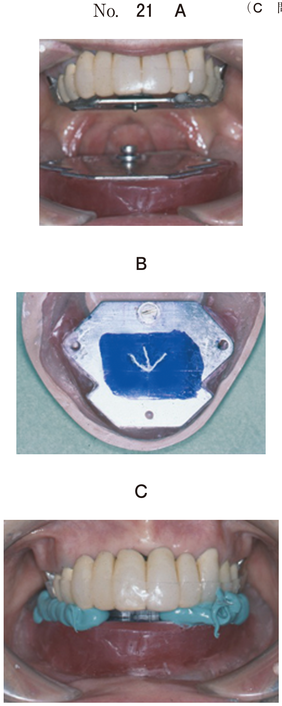

薬物を投与したときの用量と生体反応の関係を示す曲線。
| 領域 | 用語 | 意味 |
|---|---|---|
| 有効量 | 最小有効量 | 効果が現れ始める最小の用量 |
| ED50（50%有効量） | 50%に薬効が発現する用量 | |
| 最大有効量 | 中毒を起こさない最大の有効量 | |
| 中毒量 | 最小中毒量 | 中毒が現れ始める用量 |
| TD50（50%中毒量） | 50%に中毒が発現する用量 | |
| 致死量 | 最小致死量 | 死亡が現れ始める用量 |
| LD50（50%致死量） | 50%が死亡する用量 |
薬物の安全性を評価できる値
医薬品AとBの動物投与における用量-反応曲線（別冊No.26）を別に示す。
AとBのうち、安全性が低い医薬品の治療係数はどれか。1つ選べ。

【解説】医薬品Aは薬効曲線と副作用曲線が近く、安全性が低い。医薬品Aの治療係数を計算する。グラフより、ED50≒5、TD50≒40と読み取れる。
治療係数 = TD50/ED50 = 40/5 = 8